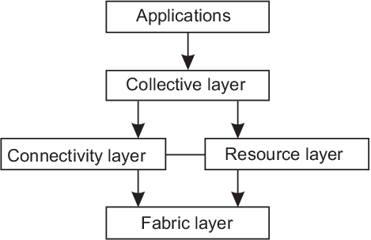

Distributed systems
1. Introduction
Omnipresence of distributed systems
Examples of distributed processing:
- Grid computing (E-Commerce,Banks, Insurance)
- WorldWideWeb, Wikipedia, RSS Feeds, Social Networks(Facebook,Instagram,...)
- Cloud computing
- Question: What is not a distributed system?
- Mainframes were traditionally not distributed
Definitions
van Steen, Tanenbaum
A distributed system is a collection of
autonomous computing elements that appears to its
users as a single coherent system
Lamport
Distributed system is the
one in which the failure of a computer you didn’t even know
existed can render your own computer unusable”
Autonomous components
- Components cooperate in order to fulfil common goals
Communication can be done
- - by exchaniging messages
- using communication mechanisms with higher semantics
(e.g. Remote Procedure Calls)
- Components are distributed in the space
multiprocessor and multicomputter systems , LAN, WAN, WWW,...
Objectives
- Exploring different distributed systems
- Design principles for distributed systems
- Usage of specific tools to implement some distributed applications
Planned topics
- Architectures of distributed systems
- Processes
- Communication and protocols
- Remote procedure calls, etc.
- Distributed algorithms
- Virtualisation
- Socket programming
- Web services and REST applications
Distributed system characteristics
- Concurrency
- No global clock
- Coordination of actions by exchanging messages
- There is no single global notion of the correct time
- Independent failures
- Failure of one component leaving the other components still running
- Failures of network
- Failures of computers(programs)
Middleware
Separate level of software logically placed on top of the
respective operating systems of the computers
Design goals for distributed systems
- Sharing of resources
- Distribution transparency
- Openness
- Scalability
Sharing resources
- Resources easily accessible for users
- Economical reasons for scharing
- Internet with its protocols for exchanging
files, mail, documents, audio, video, ...
- Peer-to-peer networks - BitTorrent used
for distributing large amounts of data
Transparency
- Access
Hiding differences in data representations
- Location
Hiding exact location of the object
- Relocation
Hiding the fact that some objects have to be moved
during the usage
- Migration
Hiding the change of the location for an object
- Replication
Hiding that an object may be on many different locations
- Conncurency
Hiding that an object is used by many users
- Failure
Hiding that failure and recovery happened
Relevance of transparency
- Achieving full transparency sometimes is not useful
- Achieving full transparency sometimes costly
- Completely hiding failures is not preferable
- It's not possible to distinguish a slow computer from a failing one
Exposing distribution:
- Making use of location based services
- Dealing with users in different time zones
- Reporting while server doesn't respond for a long time
Openness
Offering components that can be used by, or integreted into other systems
- Interoberability
- Composability
- Extensibility
System has to describe syntax and semantics of services they provide.
- Defining services through interfaces
- Open source - as open as a system can get
Separating policy from mechanism
System should be organized as a collection of relatively small
and easily replaceable or adaptable components
- Contrary to this many current systems are monolithic
- Monolitic systems tend not to be open
- Example with cashing in Web browsers
- Storage
- Exemption
- Sharing
- Refreshing
- leading to a great number of configuration parameters
Scalability
Types:
- Size scalability
- Geographical scalability
- Administrative scalability
- Counterexample - peer-to-peer applicaions
Solutons:
-
Hiding communication latency
-
Distribution of work
Example of DNS (Internet Domain Name System)
-
Replication
cashing- replication in the proximity of the client
- If we have replication together with consistency
than it leads to solutions which may be not scalable
False design principles (Peter Deutsch):
-
The network is reliable
-
The network is secure
-
The network is homogeneous
-
The topology does not change
-
Latency is zero
-
Bandwidth is infinite
-
Transport cost is zero
-
There is one administrator
Types of distributed systems
-
Distributed computing systems
- High performance distributed systems
-
Distributed information systems
-
Pervasive systems
Distributed computing systems
High performance distributed systems
-
Cluster computing.
-
Grid computing
-
-
Parllel computing led to high-performance distributed computing
-
Multiprocessor machines lead to introduction of parallel processing
and clusters in general
-
Two approaches
- Multiprocessor architecture
- Multicomputer architecture
-
Muliple threads are executing at the same time
-
Limitation - multiprocessor systems don't scale easily
Cluster computing
An example of Linux based cluster
-
Underlying hardware consists mostly of a collection of similar stations
(compute nodes are highly indentical)
moving toward more hybrid solutions where middleware is
functionally partitioned in different nodes
-
Federation of different computer systems
-
Frequentlly :
- different administrative domains
- different hardware
- different software
- different deployed network topology
-
Key issue - different organisations brought together
to allow the collaboration
-
virtual organisation
-
architectural issues
-
Layered architecture (Foster et al. 2001)

Layered grid architecture
- Fabric layer
- interfaces for sharing resources
- querying the state of a recource and resource management
- Connectivity layer
- protocols for supporting grid transactions
- transfering data between resources
- protocols to autenticate users and resources
- Resource layer
- managing resources of a single resource
- using connectivity layer function to call interfaces in the
fabric layer
- Collective layer
- deals with handling access to multiple resources
- discovery, allocation, scheduling, data replication
- broad spectrum of protocols which offer a virtual organization
- Application layer
- applications which operate withing virtual organisation
-
utility computing
-
pool of virtual resources
-
dynamically configured resources
-
scalability
-
pay-per-use model
-
layered organisation
- serious option for many enterprises
Cloud computing sevices
Characterised by an easily accessible and usable pool of virtual
resources
Cloud computing delivers convenient, on-demand access to shared pools of data, applications and hardware
over the Internet.”(RSA Security, 2009)
- Infrastructure-as-a-Service (IaaS)
- covering hardware and infrastructure layer
- deploys virtualisation techniques to provide
customers an infrastructure consisting of virtual storage
and computing resources
- Platform-as-a-Service (PaaS)
- covering the platform layer
- providing vendor-specific API to a cloud computing user
such as operating system do in the case of application developers
- example higher-level abstraction of storage in Amazon S3
- Software-as-a-Service (Saas)
- covering application layer
- spreadsheet applications, presentation applications, etc..
Cloud computing - issues
- Security and privacy issues
- Different performance profiles
- Provider lock-in
- Dependency on the network infrastructure
- Is it cost effective?
Distributed information systems
found in organizations with many networked applications
- Enerprise-wide information systems
- Enterprise middleware systems
- Network applicatons comprised of servers and clients
- Distributed transactions
- many low level requests are wrapped up in a single request
Distributed transactions
- ACID properties
- Atomic
- appears indivisible to the outside world
- Consistent
- doesn't violate system invariants
- Isolation
- concurrent transactions do not interfere with each other
- Durable
- once commited changes are permanent
Distributed transaction primitives
| Primitive |
Description |
| BEGIN_TRANSACTION |
Mark the start of a transaction |
| END_TRANSACTION |
Terminate the transaction and try to commit |
| ABORT_TRANSACTION |
Kill the transaction and restore values |
| READ |
Rad data from a table, file, etc.. |
| WRITE |
Write data to a table, file, etc.. |
The role of transaction processing monitor
- Applications don't have to implement subtransactions
for themselves
Enterprise application integration
- Remote Procedure Calls (RPC)
- procedure call packaged in a message
- Remote Method Invocation (RMI)
- similar to RPC except it operates on objects instead of functions
Pervassive systems
- ubiquitous computing systems
- mobile computing systems
- sensor networks
Ubiquitous computing systems
System is continuously present
- Distribution
- networked and make an illusion of a single coherent system
- Interaction
- Users are important and sometimes they don't even
know that they interact and send information
- example: specific settings for different car drivers
- Context awareness
- location, identity, time, activity
- GPS coordinates are sometimes crucial for some services
- Autonomy
- address allocation, adding devices, automatic updates
- Inteligence
Mobile computing networks
- various devices
- tablets, smartphones
- car equipment, GPS enabled devices, remote controls, etc..
- constant change of the location
- dynamically discovering services
- "pocket-switched networks " - social networks
Sensor networks
- collaboration of many sensors
- anwering database like queries
- What's load on a highway?
- What's the weather like in a region?
Sensor networks organization
- In reality both approaches are combined.
Literature
-
M. van Steen and A.S. Tanenbaum, Distributed Systems, 3rd ed., distributed-systems.net, 2017
-
Coulouris, G., Dollimore, J. and Kindberg, T.: Distributed Systems:
Concepts and Design, Addison-Wesley, Amsterdam, Fifth edition, ISBN-13: 978-0-273-76059-7
-
Günther Bengel: Grundkurs Verteilte Systeme: Grundlagen und Praxis des Client-Server und Distributed
Computing. Springer Vieweg, 4. Auflage, 2014. ISBN-13: 978-3834816702
-
Sunil Kumar:Distributed systems:Design concepts ,
Alpha Science International Ltd. Oxford U.K., 2017, ISBN-13: 978-1-84265-933-5
These slides are mainly created according to the book in 1,
and including figures from the book